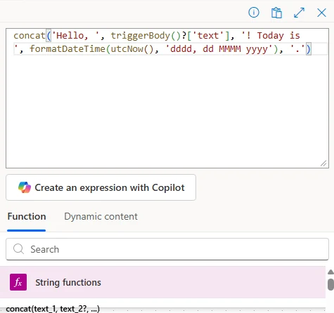

- Power Automate
- Level 1 · Foundations · 3 of 7
Dynamic content and expressions
Almost every input box takes a value in one of two ways. Dynamic content picks an output from an earlier step. An expression calculates a new value with functions. Knowing which to use is the first real skill in Power Automate.
Dynamic content or expression?
Which one do I need?
The expression editor

How expressions point at other steps
| Expression | Returns | Example value |
|---|---|---|
triggerBody()?['text'] | An input from the trigger | "alex" |
outputs('Greeting') | The result of the action named Greeting (spaces become underscores) | "Hello, alex!…" |
body('Get_item')?['Title'] | One field from an action that returns a record | "Laptop request" |
variables('Counter') | The current value of a variable | 3 |
items('Apply_to_each') | The current item inside a loop | the current row |
Reading a nested formula: inside out
Each function's result becomes the input of the one around it. Read from the innermost brackets outwards:
toUpper(substring(triggerBody()?['text'], 0, 1)) with the name alex
triggerBody()?['text'] → "alex"substring(…, 0, 1): 1 character from position 0 → "a"toUpper(…) → "A"toUpper(substring(triggerBody()?['text'], 0, 1))| Piece | What it does |
|---|---|
triggerBody()?['text'] | Get the name. |
substring(text, start, length) | Cut out part of the text. Positions start at 0. |
toUpper(...) | Make it upper case. |
What if the name is empty? substring fails, because there's no character 0. Guard it:
if(empty(triggerBody()?['text']), '', toUpper(substring(triggerBody()?['text'], 0, 1)))| Piece | What it does |
|---|---|
empty(...) | True for null or empty text. |
if(test, a, b) | Returns '' when empty, otherwise the initial. |
The function families you'll use most
| Family | Examples | Covered in |
|---|---|---|
| Text | concat, substring, replace, split, toLower, trim | Text functions (Level 2) |
| Logic | if, equals, and, or, not, empty, coalesce | Conditions, Switch and loops; Handling nulls |
| Conversion | string, int, float, bool, json | Data types and conversions |
| Date and time | utcNow, addDays, formatDateTime, convertFromUtc | Dates and time zones (Level 2) |
| Collections | length, first, last, union, contains | Arrays and objects (Level 2) |
| Workflow | triggerBody, outputs, body, variables, items | This page |
Watch out
- When a long formula misbehaves, split it across several Compose actions, one function each, and see which step goes wrong.
outputs()for Compose;body()for connector actions (just the response body).- Use
?['field'], not['field'], for fields that might be missing.
New to this? Start from the basics optional
Function: a named operation that takes inputs in brackets and returns a value: length('abc') returns 3.
Argument: a value passed into a function, separated by commas.
The ? operator: ?['field'] reads a field if it exists, otherwise returns null.
Build it step by step optional
- Open your first flow and add a Compose named Initial.
- Click in Inputs, select fx, type
toUpper(substring(, switch to Dynamic content and pick Name. - Finish with
, 0, 1))and select Add. - Test with alex: Initial shows A. Test with an empty name: it fails. Replace it with the guarded
if(empty(…))version.
Common mistakes
- Renaming an action after expressions refer to it. Name actions first.
- Mixing up
outputs()andbody(). - Forgetting that positions start at 0, not 1.
- Typing a formula without fx, so it's saved as plain text.